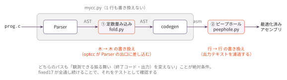

最適化入門 — 定数畳み込みとピープホール
今日のゴール
自分のコンパイラに2つの最適化パスを追加して、生成される命令数を減らす。
そして fixed17 が全通し続けることで、意味を変えずに速くできたことを確認する。
この回の位置づけ
| 項目 | 内容 |
|---|---|
| 必須の前提 | 着手はコマ6（関数呼び出し）まで。完了条件のうち golden.py は完成した final/mycc.py を土台に fixed17 を回すので、やり切るにはコマ15 も要る |
| 推奨の前提 | — |
| 改変しない | mycc.py、scaffold/、ラッパー foldcc.py（配布済み・完成品） |
| 編集する | fold.py、peephole.py |
| 完了条件 | check.py の全 Step が PASS になり、golden.py が fixed17 全通と命令数の削減を報告する |
| コマ数 | 1 |
| 備考 | 最適化入門発展シリーズの第1回。O 系列（O1〜O7）の前哨で、測定基盤を作らずに始められるよう軽装にしてある |
この回と O 系列の関係。 O 系列は「測る → 解析する → 変換する」を積み上げる本格版で、前提はコマ15 である。 B 系列はそこへ入る前の軽装版なので、題材が一部重なる。
| この回で書くもの | O 系列での対応 | 違い |
|---|---|---|
remove_jump_to_next（規則B） |
O7 の Step 3。同名・同一の最適化である | O7 ではループ回転の後始末として書く |
fuse_push_const_pop（規則A） |
O3（命令選択）が別の形で同じ無駄を消す | O3 は offset(base) への畳み込み |
定数畳み込み（fold.py） |
対応なし。O 系列は AST を触らない | — |
どちらを先にやるか。 コマ15 がまだなら、この回から入る（O 系列は始められない）。 コマ15 が終わっているなら、先に O1 で物差しを作ってから戻ってくると、 下の「16%減」が実行時間の話なのかコードサイズの話なのかが分かる （発展課題4 がそれである）。
最適化とは何か — 「速くする」の前に「壊さない」
いま自分のコンパイラは、return 3 + 4; に対して次のような命令を出している。
li a0, 3
addi sp, sp, -8
sd a0, 0(sp)
li a0, 4
ld a1, 0(sp)
addi sp, sp, 8
add a0, a1, a07命令かけて、実行時に必ず 7 になる計算をしている。
li a0, 7 の1命令で済むはずである。
最適化とは、プログラムの観測できる振る舞いを変えずに、 生成コードを速く（または小さく）することである。 ここで「観測できる振る舞い」とは、この講義では次の2つを指す。
| 観測できるもの | 確認方法 |
|---|---|
| 終了コード | .ans ファイルとの比較 |
| 標準出力 | .stdout ファイルとの比較 |
つまり既存のテストが全通し続けることが、最適化が正しいことの証明になる。
fixed17 が、そのままこの回の安全網になる。
最適化で最も多いバグは「速くならない」ではなく「壊れる」である。
命令を1つ消すたびに fixed17 を回す習慣をつけること。
テストが落ちたら、その置換は意味を変えている。
2つのパスをどこに差し込むか
最適化は、コンパイラのどの段階でも書ける。この回では対照的な2つを作る。

| パス | 入力 → 出力 | 見えるもの | 見えないもの |
|---|---|---|---|
| ① 定数畳み込み | AST → AST | 式の構造・型 | レジスタ・命令 |
| ② ピープホール | アセンブリ → アセンブリ | 命令の並び | 式の構造 |
同じ「無駄を消す」でも、見えている情報が違うので、消せる無駄が違う。 上流ほど意味が分かるので大胆な変換ができ、下流ほど実際の命令に近いので 細かい無駄が見える。実際のコンパイラも、この両方を持っている。
① 定数畳み込み — 木を書き換える
コンパイル時に値が決まる部分式を、計算済みの ND_NUM に置き換える。
(add (num 1) (mul (num 2) (num 3))) → (num 7)木を後行順（子が先）に処理するのがコツである。
子を先に畳み込んでおけば、親では「両方の子が ND_NUM か」を見るだけで済む。
(1 + 2) * 3 → 子を畳む → (num 3) * 3 → 親を畳む → (num 9)走査（fold_node）と置き換えの判定（fold_expr）はスケルトンに完成済みで、
実装するのは演算の意味、つまり「この演算子を定数2つに適用したらいくつか」だけである。
落とし穴1: C の除算は Python と違う
-7 // 2 # Python: -4（床関数：小さい方へ）
-7 / 2 # C: -3（0 方向へ切り捨て）コマ1・コマ2 の資料で「負数を含む割り算・剰余は扱わない」と注意していたのは、 この差があるからだった。畳み込みでは実行時と同じ答えを出さなければならないので、 C の規則（0 方向へ切り捨て、剰余の符号は左辺と同じ）に合わせる必要がある。
abs() で計算してから符号を付け直すのが素直である。
落とし穴2: 畳み込んではいけない場合
| 式 | 扱い | 理由 |
|---|---|---|
5 / 0 |
畳み込まない（None を返す） |
実行時エラーを消してはいけない |
a + 2 * 3 |
2 * 3 だけ畳む |
変数の値はコンパイル時に分からない |
a ? 1 : 2 |
cond が定数でも畳まない | この回の対象は二項・単項のみ（発展課題へ） |
「分からないものは触らない」— 最適化の基本姿勢である。
落とし穴3: 64bit で丸める
実行時のレジスタは 64bit なので、桁あふれもそのとおりに再現する必要がある。
Python の整数は無限精度なので、to_i64()（配布済み）で毎回丸める。
② ピープホール最適化 — 窓から覗いて置き換える
生成されたアセンブリを小さな窓（peephole）で覗き、 既知のパターンを短い命令列に置き換える。文脈を見ないので実装が単純で、 それでいてよく効く。
規則A: push / li / pop の圧縮
コマ2 以来の二項演算パターンは、右辺が定数のときに無駄が大きい。
addi sp, sp, -8 ┐
sd a0, 0(sp) │ → mv a1, a0
li a0, 1 │ li a0, 1
ld a1, 0(sp) │
addi sp, sp, 8 ┘右辺の計算が li 1つだけなら、左辺を退避する必要がない。
a1 に移してから定数を読めば、同じ状態（a1=左辺、a0=右辺）が作れる。
5命令が2命令になる。i = i + 1 のようなループ内の式に何度も現れるので、効果が大きい。
規則B・C: 直後のラベルへ飛ぶジャンプの削除
j .L3 ← 消してよい
.L3:飛ばなくても次の命令は同じなので、この j は不要である。
beqz も同様に、条件ごと消せる（分岐してもしなくても行き先が同じ）。
コマ4 の if/else 生成や、コマ5 のループ生成で自然に生じる形である。
規則B は O7 の Step 3 と同じものである。
O7（ブロック整列とループ回転）でも remove_jump_to_next という同じ名前の
関数を書く。あちらではループ回転が新しく作った「次の行へのジャンプ」を
片付ける役として登場するので、動機は違うが中身は同じ最適化である。
片方を書いたら、もう片方は自分の実装を持ち込んでよい。
不動点まで繰り返す
ある置換で別の置換が可能になることがあるので、
何も変わらなくなるまで繰り返す。この駆動部（optimize）は完成済みである。
なぜテキストを書き換えるのか。 本物のコンパイラは、アセンブリの文字列ではなく命令の内部表現に対して ピープホールをかける。テキスト処理は「行の切り出し」という本質的でない仕事が増えるが、 コンパイラ本体に一切手を入れずに追加できるという利点がある。 まず効果を体感し、必要になったら内部表現に移すのは、実務でもよくある順序である。
実装
| Step | 実装対象 | ファイル |
|---|---|---|
| 1 | fold_binary / fold_unary |
fold.py |
| 2 | fuse_push_const_pop |
peephole.py |
| 3 | remove_jump_to_next / remove_branch_to_next |
peephole.py |
走査・判定・駆動はすべて完成済みで、書くのは「規則そのもの」だけである。
動かし方
foldcc.py は、自分の final/mycc.py に2つのパスを差し込んで実行するラッパーである
（完成品。編集しない）。
# 最適化ありでコンパイル
python3 foldcc.py ../../final/tests/f05_for.c
# パスを個別に外して比べる
python3 foldcc.py --no-fold ../../final/tests/f05_for.c
python3 foldcc.py --no-peephole ../../final/tests/f05_for.c
# 命令数を数える
python3 foldcc.py ../../final/tests/f05_for.c | python3 ../count_insns.pypeephole.py は単体のフィルタとしても使える。
python3 ../../final/mycc.py foo.c | python3 peephole.pyテスト
python3 check.py # Step ごとの単体テスト(未実装は SKIP)
python3 golden.py # fixed17 全通の確認 + 命令数の before/after 表golden.py は2つのことを続けて行う。
- 正しさ:
fixed17を最適化ありでコンパイルして全テスト実行 - 効果: 各テストの命令数を最適化なし／ありで数えて表示
全テスト PASS かつ命令数が減っていることが、この回の完了条件である。 参考までに、教員の実装では合計 1250 → 1052 命令（約16%減）になる。
発展課題
- 代数的な単純化:
x * 1→x、x + 0→x、x * 0→0をfold_exprに追加する。x * 0はなぜ安全か（副作用がないか）も考える liの直後の演算:li a1, C+add a0, a1, a0をaddi a0, a0, C（C が12bit に収まるとき）に潰す規則を追加する- 到達不能コードの削除:
jやretの直後からラベルまでの命令は 決して実行されない。これを削除する規則を書く - 動的命令数で測り直す: 上の「16%減」は静的命令数（出力に命令が何個あるか）の話で、
実行が16%速くなったという意味ではない。ループの中の1命令は何度も実行されるからである。
実行された命令の回数を数える方法は O1 が扱う
（
qemu-riscv64 -one-insn-per-tb -d exec,nochainで実行を追い、nmで引いた自作関数のアドレス範囲だけに絞る。絞らないと libc の起動処理が 95%を占めて効果が埋もれる）。O1 の発展課題1 が、この回の出力を実際にその物差しで測り直す - Cond の畳み込み:
condが定数なら、then/else_のどちらか一方を選んで その枝だけに置き換える変換をfold_exprに足す
コラム: 最適化の名前。 定数畳み込み（constant folding）とピープホール（peephole optimization）は、 どちらも1960年代から知られている古典的な手法である。 この先には、レジスタ割り当て（B2・O4）、末尾呼び出し最適化（B3）、 命令選択（O3）、生存解析（O5）、コピー伝播と死コード除去（O6）、 ループ回転（O7）が続く。さらにその先には、この教材では扱わない 共通部分式の除去やループ不変式の移動がある。 最適化は「賢いことをする」よりも「壊さない範囲で無駄を見つける」技術であり、 そのために必要なのは、いま自分が持っているようなテストスイートと、 「本当に良くなったのか」を答える物差し（O1）である。